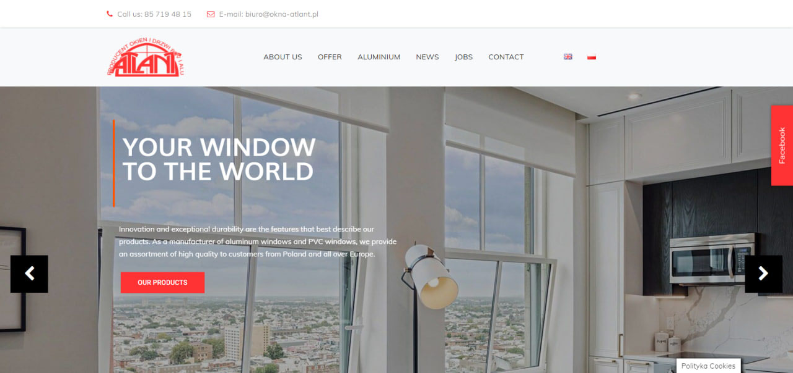
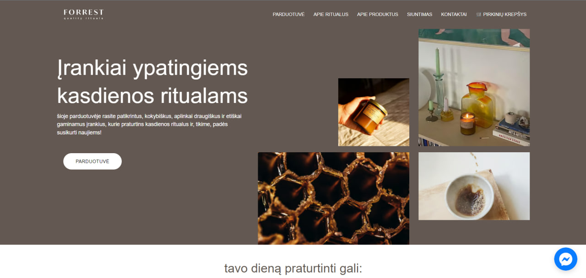
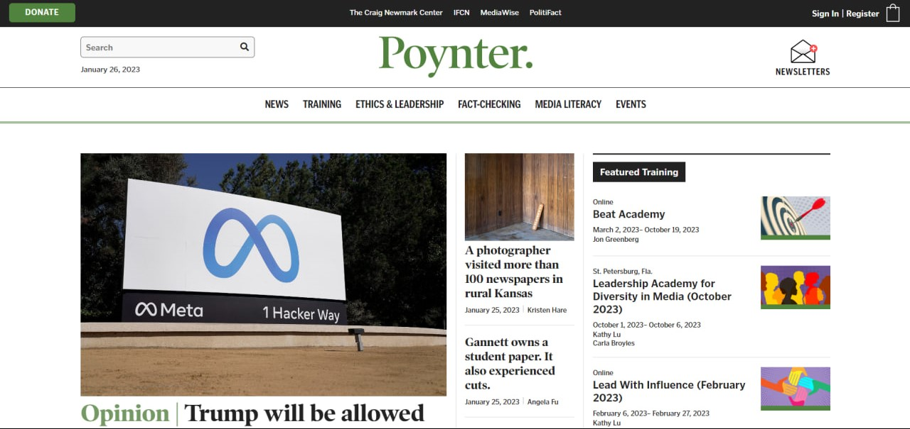
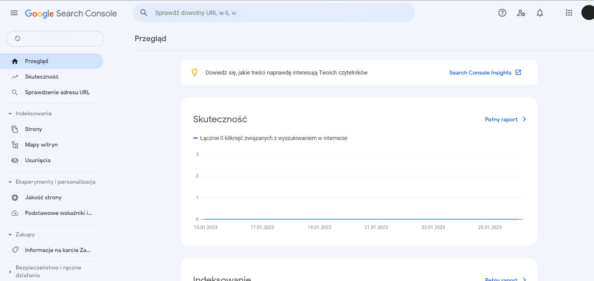
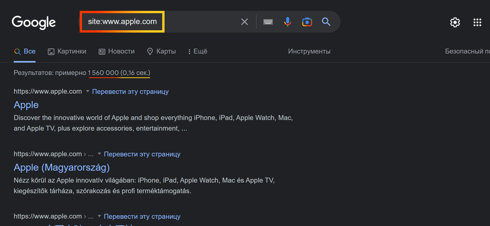

Введення
Типи сайтів
Типи сайтів - основні напрямки сайтів, завдяки яким визначаються стратегії просування ресурсу. Також важливо розуміти не тільки тип сайту, але і на чому він заробляє. (бізнес в інтернеті)- Односторінковий - погано підходить під SEO, через малу кількість інформації;
- Корпоративний (багато сторінок) - добре підходить під SEO, через велику кількість сторінок і контенту;
- Інтернет магазин - ідеальний сайт для SEO, бо тут іде просування окремих сторінок;
- Інформаційний ресурс - добре підходить, бо google в першу чергу інформаційний простір, алгоритми дуже полюбляють схожого типу сайти, де ще неприклад мала кількість реклами і посилань на інші ресурси;
- Портал - не дуже підходять, через велику кількість чужих посилань.
Бізнес в інтернеті
- Послуги (сайт компанії, яка може для вас щось зробити, наприклад розмалювати ваш форфоровий набір посуду, клінінг і т.д.);
- E-Commerce (сайт компанії, яка продає вам конкретну річ/речі, наприклад яку вони вже купили у постачальника);
- Медіа (сайт компанії, яка частіше безкоштовно демонструє вам новини, різні статті і т.п.).



Технічний аудит
Технічний аудит - всебічний аналіз сайту, пошук помилок, перевірка на відповідність до пошукових систем. Відноситься до типу постійних технічних робот, таких як: виявлення помилок, робота з конентом на сайті (коли просувається конкретна сторінка), робота з посиланнями, аналітика за допомогою сторонніх сервісів і т.д.
- Допомагає привести сайт у
стартове становище, актуальне для пошукової системи;
- Допомагає виявити дірки та
проблеми проекту;
- Якщо проблеми вирішені, то за
допомогою техаудиту можна знайти точки опори в просуванні, через які
і буде відбуватися апргрейд.
Початок Техаудиту
- Аналіз поточного стану сайту (потрібно зрозуміти чи треба щось робити, допоможе з цим сервіс Google Analytics, покаже активність на вашому сайті і як користувачі потрапляють на ваш сайт, ще можна використовувати google search console);
- Аналіз тематики та специфіки (конкретно вашого сайту, або сторінки на ньому);
- Аналіз ключових запитів (що пишуть, щоб потрапити на ваш сайт, допоможе сервіс SERPSTAT);
-
Аналіз конкурентів (складається з наступних кроків, і тут теж
можна використовувати SERPSTAT):
- - Ступінь розширення структури;
- - Охоплення ключових запитів;
- - Текстовий контент;
- - Внутрішня оптимізація;
- - Зовнішня маса посилань;
- - Фішки.
-
Формування цілей, виходячи з:
- - Аналізу поточного стану сайту;
- - Аналізу сезонності (чи актуален контент у конкретну пору року);
- - Аналізу глибини ніші(розуміння сили конкурентів, щільність подібного контенту у серпі...);
- - Аналізу графіку конкурентів, або на скільки гарно працює їх seo.
Ранжування
Ранжування - присвоєння певного рангу чи місця до сайту перед видачею його у серпі.
Google Search Console - завдяки цьому
сайту користувач може спробувати додати сайт, яким володіє, в індекс
ПС:

Один з чудових варіантів покращити Ранжування свого сайту - зовнішні
посилання. Вони можуть бути як на інших сайтах, які продають рекламу
на своїй сторінці, так і в соц мережах, але це вже інший тип
поширення.
Фактори ранжування (є 9 основних типів):
- Фактор домену (вік, історія тощо);
- Фактор сайту (швидкість завантаження, слів у title);
- Фактор рівня сайту (довіра сайту, швидкість відповіді, кількість сторінок);
- Фактор зворотних посилань;
- Фактор взаємодії з користувачами (останній клік, трафік, повторні візити, коментарі (якщо вони є на сайті));
- Фактор спеціальних правил алгоритмів (скарги, історія браузерів тощо);
- Соціальні сигнали (все, що пов'язане з соціальними мережами, де є посилання на сайт, про цей тип поширення я вже казав вище);
- Сигнали бренду (відомість бренду, сайту, чи є про нього інформація в інших джерелах);
- Фактор спаму на сайті та поза сайтом (багато реклами, фільтри і т.п.).
Зовнішні фактори ранжування
- Всі фактори, що підвласні власнику сайту;
Внутрішні фактори ранжування
- Не підвладні власнику сайту.
Додаткові фактори оцінювання сайту:
- За унікальністю (в ідеалі не менше 95%);
- За релевантністю;
- За читабельністю;
- За оптимізацією сайту (адаптивність під різні екрани, під різну потужність пристрою);
- За експертністю;
- За достовірністю;
- За авторитетом;
Фільтри і санкції ПС
Санкції - припинення просування вашої сторінки у серпі, її анранжування за те, що ви не дотримались спеціальних ранжувальних фільтрів, за якими знаходять і карають погані сайти:- За копію контенту (або відсутність унікальності, скопійований текст, картинки тощо);
- За погану та складну структуру (робот попросту не зможе його просканити);
- За придбані посилання (якщо вони поганої якості та їх багато скрізь);
- За продажу посилань (зловживання продажем місця посилання на сайті);
- За коливання кількості посилань (орендні посилання тощо);
- За накрутку (коментарів від користувачів/ботів, або інші придбані покупні послуги);
- За афілійування (створення копій сайту, коли ми намагаємося заповнити простір серпа спеціально, для просування (дублювання контенту));
- За фільтр дорослого контенту (якщо його там не повинно бути, не такий небезпечний фільтр, але все ж таки…).
- По-перше, за допомогою google search console у вкладці 'проблеми безпеки' ознайомитися зі скаргою, інший спосіб: google analytics, треба продивитися момент спаду активності, перевірити оновлення ресурсу, які були десь у той час, та зрозуміти що ж стало причиною санкції, можливо ваша відповідь лежить в основних 9 причинах;
- По-друге, після виявлення причини треба виправити її, щоб відповідати усім вимогам фільтрів ПС;
- По-третє, після виправлення помилки, треба знову подати запит на індексацію вашого сайту, та його сторінок;
- Якщо ви впевнені що все зробили правильно, чекайте відповідь про рішення Google.
Ось пошуковий оператор, щоб перевірити коли в останній раз павук був
у вас на сайті:

Особливості пошукової видачі
Регіональність - місце, де
вводиться запит:
Дуже важливо розуміти в якій країні ви розповсюджуєте свій контент,
в якому місці, можливо навіть районі. Цими данними треба оперувати
під час створення запитів для семантичного ядра (про це у наступному
пункті). Налаштувати свій браузер для перевірки регіональної видачі
можна за допомогою:
- Налаштування локації у консолі google - F12-> Settings-> More tools-> Sensors;
- Аддон - наприклад можно використати Geo Clever;
- Проксі або VPN - допоможуть у перевірці регіональнії видачі.